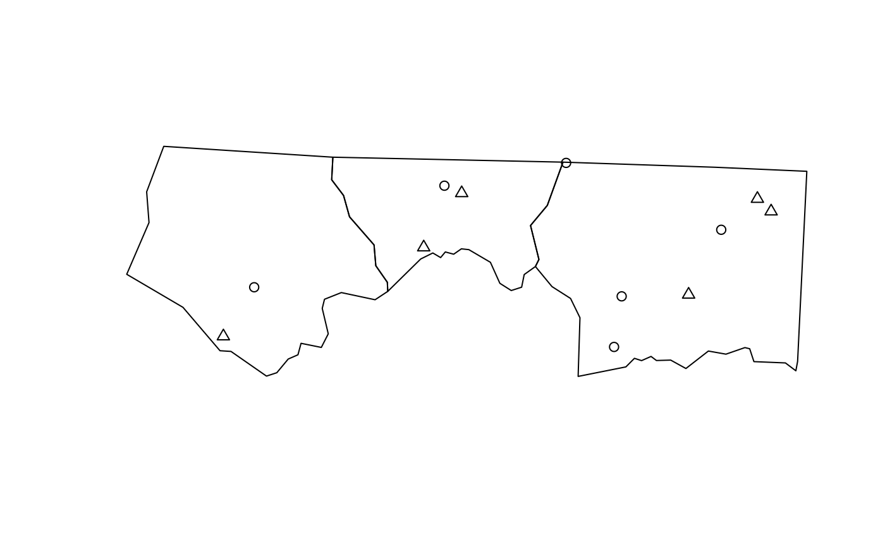
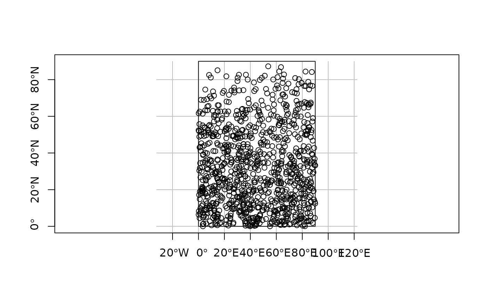
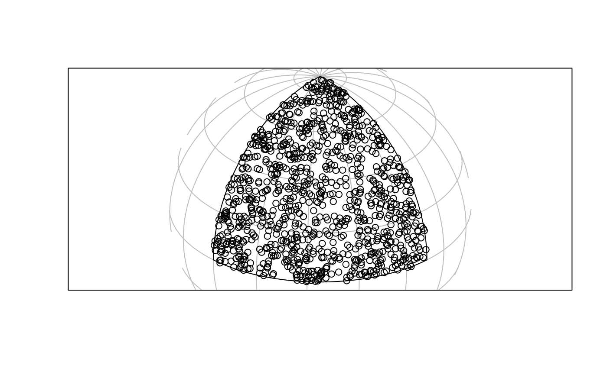
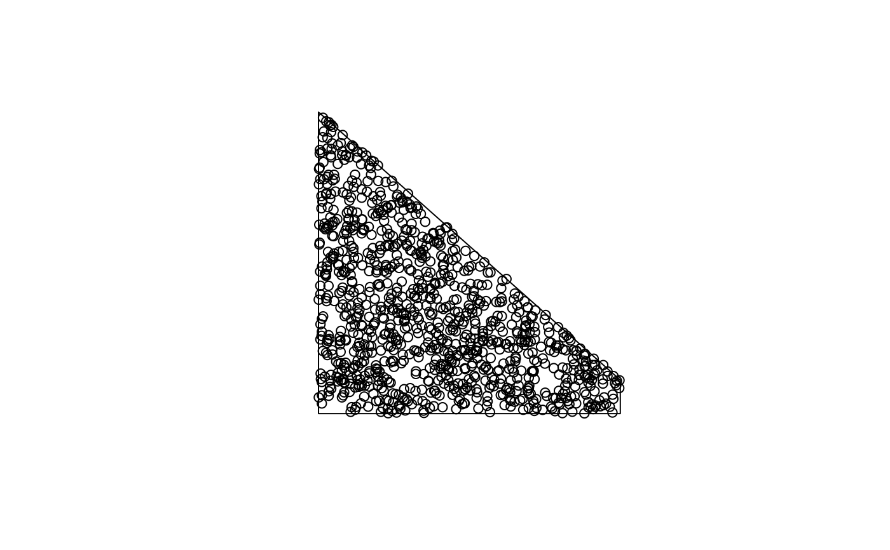
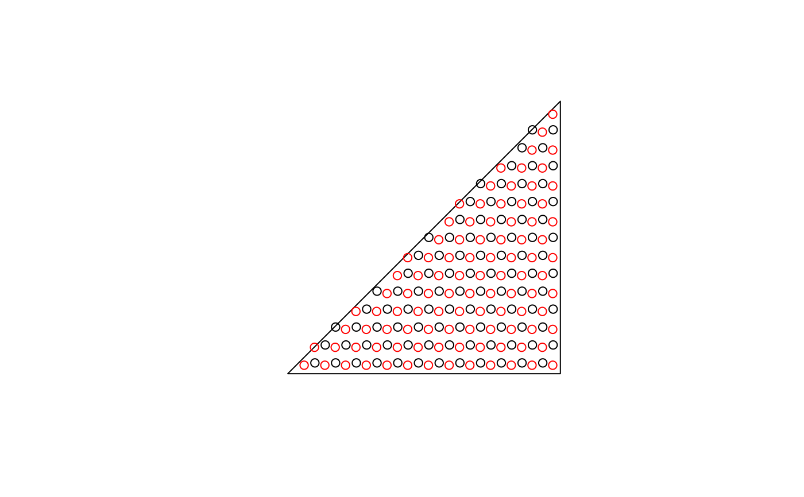
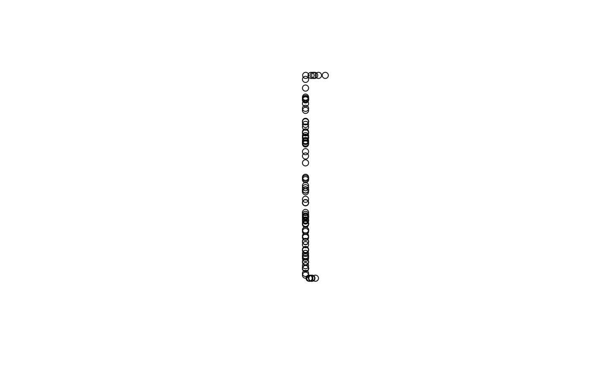

Sample points on or in (sets of) spatial features.
By default, returns a pre-specified number of points that is equal to
size (if type = "random" and exact = TRUE) or an approximation of
size otherwise. spatstat methods are
interfaced and do not use the size argument, see examples.
Usage
st_sample(x, size, ...)
# S3 method for class 'sf'
st_sample(x, size, ...)
# S3 method for class 'sfc'
st_sample(
x,
size,
...,
type = "random",
exact = TRUE,
warn_if_not_integer = TRUE,
by_polygon = FALSE,
progress = FALSE,
force = FALSE
)
# S3 method for class 'sfg'
st_sample(x, size, ...)
# S3 method for class 'bbox'
st_sample(
x,
size,
...,
great_circles = FALSE,
segments = units::set_units(2, "degree", mode = "standard")
)Arguments
- x
object of class
sforsfc- size
sample size(s) requested; either total size, or a numeric vector with sample sizes for each feature geometry. When sampling polygons, the returned sampling size may differ from the requested size, as the bounding box is sampled, and sampled points intersecting the polygon are returned.
- ...
passed on to sample for
multipointsampling, or tospatstatfunctions for spatstat sampling types (see details)- type
character; indicates the spatial sampling type; one of
random,hexagonal(triangular really),regular,Fibonacci, or one of thespatstatmethods such asThomasfor callingspatstat.random::rThomas(see Details).- exact
logical; should the length of output be exactly
- warn_if_not_integer
logical; if
FALSEthen no warning is emitted ifsizeis not an integer- by_polygon
logical; for
MULTIPOLYGONgeometries, should the effort be split byPOLYGON? See https://github.com/r-spatial/sf/issues/1480 the same as specified bysize?TRUEby default. Only applies to polygons, and whentype = "random".- progress
logical; if
TRUEshow progress bar (only ifsizeis a vector).- force
logical; if
TRUEcontinue when the sampled bounding box area is more than 1e4 times the area of interest, else (default) stop with an error. If this error is not justified, try settingoriented=TRUE, see details.- great_circles
logical; if
TRUE, great circle arcs are used to connect the bounding box vertices, ifFALSEparallels (graticules)- segments
units, or numeric (degrees); segment sizes for segmenting a bounding box polygon if
great_circlesisFALSE
Details
The function is vectorised: it samples size points across all geometries in
the object if size is a single number, or the specified number of points
in each feature if size is a vector of integers equal in length to the geometry
of x.
if x has dimension 2 (polygons) and geographical coordinates (long/lat), uniform random sampling on the sphere is applied, see e.g. https://mathworld.wolfram.com/SpherePointPicking.html.
For regular or hexagonal sampling of polygons, the resulting size is only an approximation.
As parameter called offset can be passed to control ("fix") regular or hexagonal sampling: for polygons a length 2 numeric vector (by default: a random point from st_bbox(x)); for lines use a number like runif(1).
Fibonacci sampling see: Alvaro Gonzalez, 2010. Measurement of Areas on a Sphere Using Fibonacci and Latitude-Longitude Lattices. Mathematical Geosciences 42(1), p. 49-64
For regular sampling on the sphere, see also geosphere::regularCoordinates.
Sampling methods from package spatstat are interfaced (see examples), and need their own parameters to be set.
For instance, to use spatstat.random::rThomas(), set type = "Thomas".
For sampling polygons one can specify oriented=TRUE to make sure that polygons larger than half the globe are not reverted, e.g. when specifying a polygon from a bounding box of a global dataset. The st_sample method for bbox does this by default.
Examples
nc = st_read(system.file("shape/nc.shp", package="sf"))
#> Reading layer `nc' from data source
#> `/home/runner/work/_temp/Library/sf/shape/nc.shp' using driver `ESRI Shapefile'
#> Simple feature collection with 100 features and 14 fields
#> Geometry type: MULTIPOLYGON
#> Dimension: XY
#> Bounding box: xmin: -84.32385 ymin: 33.88199 xmax: -75.45698 ymax: 36.58965
#> Geodetic CRS: NAD27
p1 = st_sample(nc[1:3, ], 6)
p2 = st_sample(nc[1:3, ], 1:3)
plot(st_geometry(nc)[1:3])
plot(p1, add = TRUE)
plot(p2, add = TRUE, pch = 2)

x = st_sfc(st_polygon(list(rbind(c(0,0),c(90,0),c(90,90),c(0,90),c(0,0)))), crs = st_crs(4326))
plot(x, axes = TRUE, graticule = TRUE)
if (sf_extSoftVersion()["proj.4"] >= "4.9.0")
plot(p <- st_sample(x, 1000), add = TRUE)

if (require(lwgeom, quietly = TRUE)) { # for st_segmentize()
x2 = st_transform(st_segmentize(x, 1e4), st_crs("+proj=ortho +lat_0=30 +lon_0=45"))
g = st_transform(st_graticule(), st_crs("+proj=ortho +lat_0=30 +lon_0=45"))
plot(x2, graticule = g)
if (sf_extSoftVersion()["proj.4"] >= "4.9.0") {
p2 = st_transform(p, st_crs("+proj=ortho +lat_0=30 +lon_0=45"))
plot(p2, add = TRUE)
}
}

x = st_sfc(st_polygon(list(rbind(c(0,0),c(90,0),c(90,10),c(0,90),c(0,0))))) # NOT long/lat:
plot(x)
p_exact = st_sample(x, 1000, exact = TRUE)
p_not_exact = st_sample(x, 1000, exact = FALSE)
length(p_exact); length(p_not_exact)
#> [1] 1000
#> [1] 1000
plot(st_sample(x, 1000), add = TRUE)

x = st_sfc(st_polygon(list(rbind(c(-180,-90),c(180,-90),c(180,90),c(-180,90),c(-180,-90)))),
crs=st_crs(4326))
# FIXME:
#if (sf_extSoftVersion()["proj.4"] >= "4.9.0") {
# p = st_sample(x, 1000)
# st_sample(p, 3)
#}
# hexagonal:
sfc = st_sfc(st_polygon(list(rbind(c(0,0), c(1,0), c(1,1), c(0,0)))))
plot(sfc)
h = st_sample(sfc, 100, type = "hexagonal")
h1 = st_sample(sfc, 100, type = "hexagonal")
plot(h, add = TRUE)
plot(h1, col = 'red', add = TRUE)

c(length(h), length(h1)) # approximate!
#> [1] 97 99
pt = st_multipoint(matrix(1:20,,2))
ls = st_sfc(st_linestring(rbind(c(0,0),c(0,1))),
st_linestring(rbind(c(0,0),c(.1,0))),
st_linestring(rbind(c(0,1),c(.1,1))),
st_linestring(rbind(c(2,2),c(2,2.00001))))
st_sample(ls, 80)
#> Geometry set for 4 features (with 1 geometry empty)
#> Geometry type: MULTIPOINT
#> Dimension: XY
#> Bounding box: xmin: 0 ymin: 0 xmax: 0.08531849 ymax: 1
#> CRS: NA
#> MULTIPOINT ((0 0.01737041), (0 0.8441574), (0 0...
#> MULTIPOINT ((0.03337024 0), (0.03010541 0), (0....
#> MULTIPOINT ((0.04159846 1), (0.06942899 1), (0....
#> MULTIPOINT EMPTY
plot(st_sample(ls, 80))

# spatstat example:
if (require(spatstat.random)) {
x <- sf::st_sfc(sf::st_polygon(list(rbind(c(0, 0), c(10, 0), c(10, 10), c(0, 0)))))
# for spatstat.random::rThomas(), set type = "Thomas":
pts <- st_sample(x, kappa = 1, mu = 10, scale = 0.1, type = "Thomas")
}
bbox = st_bbox(
c(xmin = 0, xmax = 40, ymax = 70, ymin = 60),
crs = st_crs('OGC:CRS84')
)
set.seed(13531)
s1 = st_sample(bbox, 400)
st_bbox(s1) # within bbox
#> xmin ymin xmax ymax
#> 0.1809029 60.0231214 39.9875925 69.9900375
s2 = st_sample(bbox, 400, great_circles = TRUE)
st_bbox(s2) # outside bbox
#> xmin ymin xmax ymax
#> 0.2031083 60.2048778 39.9612431 69.9107718